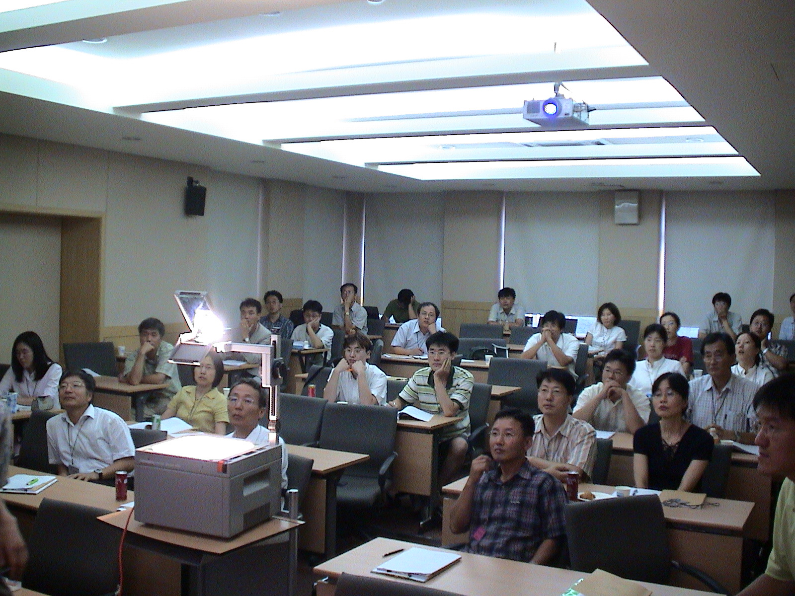
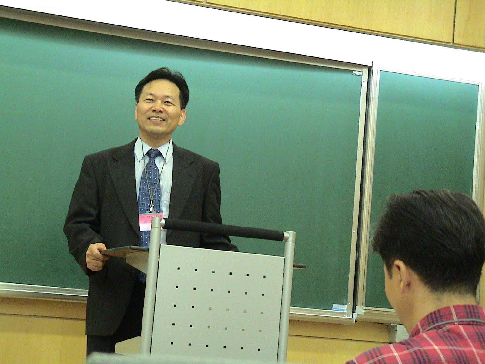
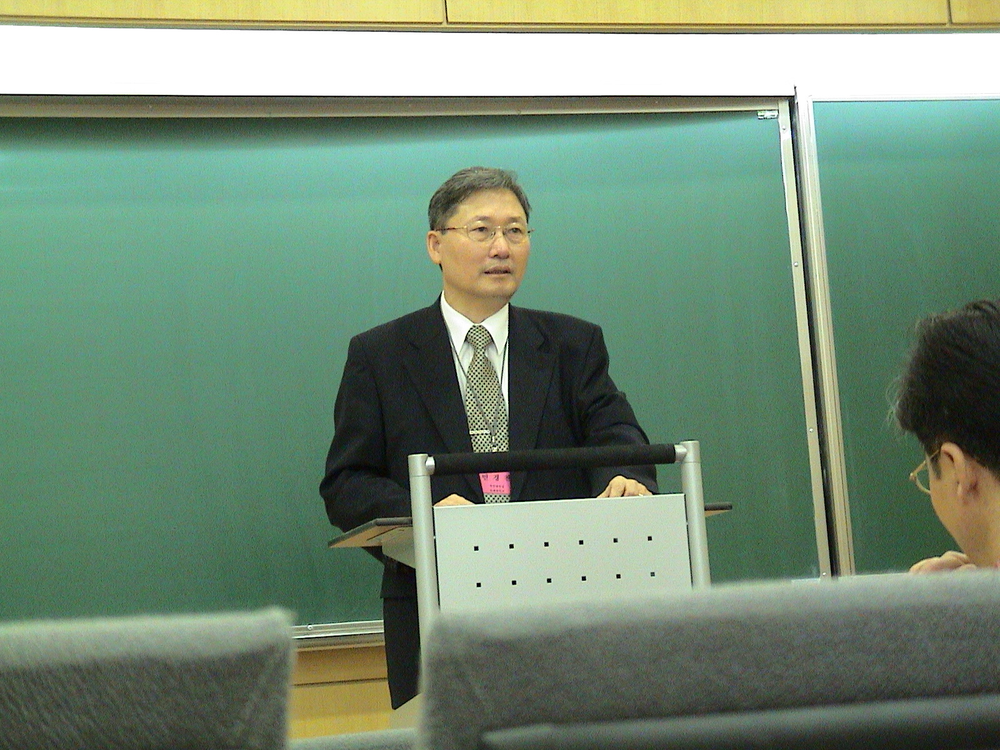
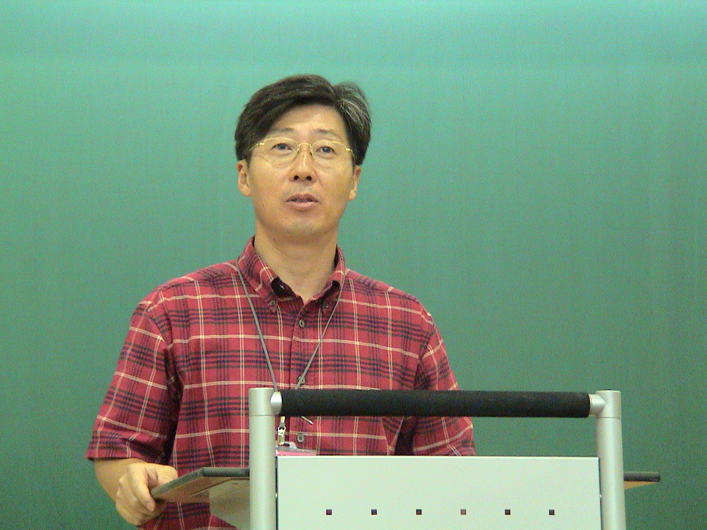
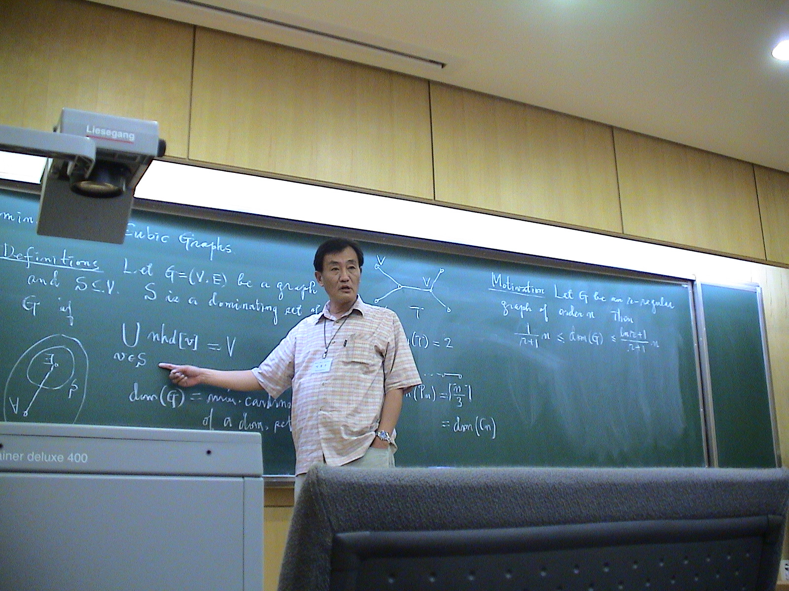
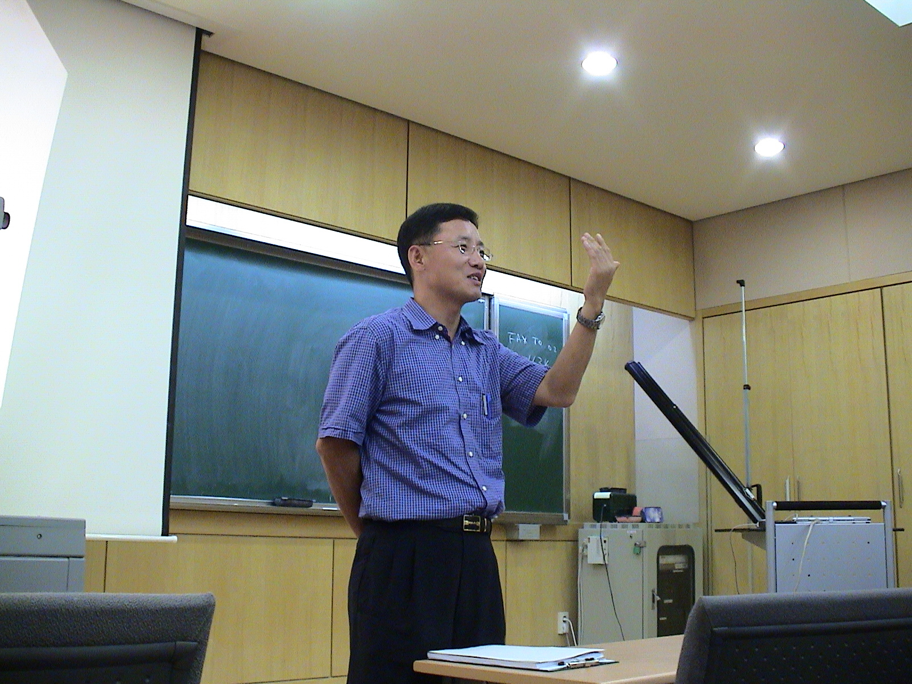
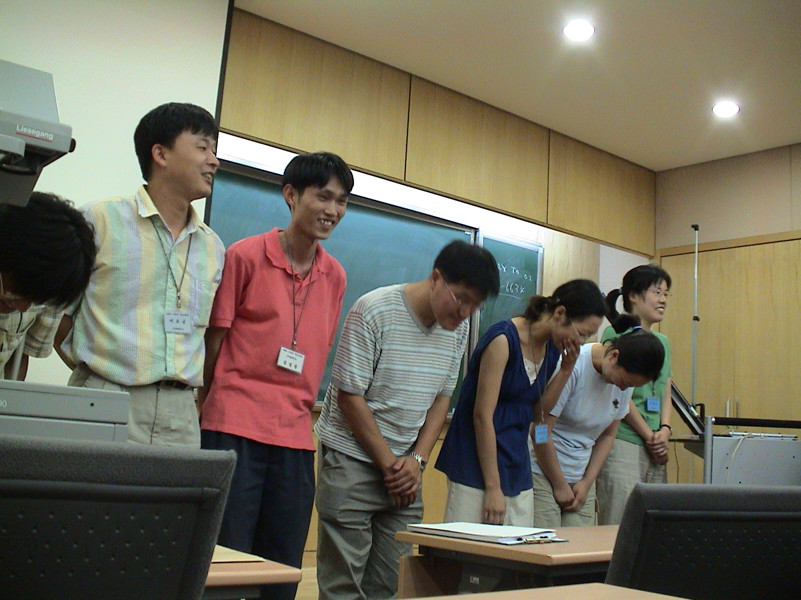

2004 조합론 학술대회

2004년 8월 16 (월) ~ 8월 17일(화)
연세대학교 이과대학 수학과 과학관 225호
주관
: 연세대 BK 연구팀,
후원 : 대한수학회 전산수학분과
Organizing committee
박승경(연세대학교)
이상구(성균관대학교)
이상욱(수원대학교)
Aug. 16- Aug 17, 2004
Yonsei University, Seoul, Korea
2004년 8월, Combinatorics와 관련된 국내 연구의 활성화를 위하여 연세대학교 수학과와
대한수학회 전산수학 분과의 후원으로 Combinatorics Workshop 2004 을 개최할 예정입니다. 관심이 있으신 분들의 많은 참가와 협조를
부탁드립니다.
◐ 목 표
조합론 이론의 소개와 그와 관련된 문제의 소개.
조합론 분야 국내 연구 인력의
양성을 위한 working group의 구성.
조합론과 관련된 연구의 공동연구 활동 모색.
국제 학문 교류 도모 및 경쟁력 확보.
◐ 주 제
조합론 및 그와 관련된 문제에 대한 연구.
◐ 장 소
연세대학교 이과대학 수학과 과학관
225호
◐ 등록비
없음
◐ 내 용
1. Proceeding 제공.
2. 논문 발표
3. 자유토론
4. 관련 문제의 학습과 개발을 위한 토의 및 토론, 연구 문제의 개발과 공동연구 모색.
◐ Tentative Schedule: 대한수학회 홈페이지 http://www.kms.or.kr/ 게시판 -> 학술활동 -> #
39번 조합론 학술회의 참조
또는 http://matrix.skku.ac.kr/conference/2004Combnatorics2.htm
--- 일 정 -----
9:00 -- 9:30 등록
9:30 -- 10:00 개회식
  
대한수학회장님축사 대한수학회 부회장겸 연대 계열학부장님 축사 연대 BK 21 팀장님 축사
8월16일(월)
오전일정 (좌장 : 이상욱교수)
10:00 -- 10:40 (invited speaker) 김서령교수(서울대)
Competition Graphs of Semiorders and the Conditions and
10:40 -- 11:00 민숙교수(연세대)
Maximal inversions and forbidden permutations
11:00 -- 11:20 김상목박사(서강대)
Sets of Type-(1,n) in Symmetric Designs
11:20 -- 11:40 민혜성(연세대)
Noncommutative t-Schur functions
11:40 -- 1:40 점심
8월16일(월) 오후일정 I (좌장 김서령교수)
1:40 -- 2:20 (invited speaker) 고영미교수(수원대)
Random graphs and real world networks
2:20 -- 3:00 (invited speaker) 김현광교수(포항공대)
Codes over poset metrics
3:00 -- 3:20 현종윤(포항공대)
MacWilliams duality and association schemes arising from poset metrics
3:20 -- 3:40 휴식
8월16일(월) 오후일정 II (좌장 김현광교수)
3:40 -- 4:20 (invited speaker) 이재운교수(영남대)
Some zeta functions of graph bundles
4:20 -- 5:00 (invited speaker) 김동수교수(과기대)
Combinatorics of orthogonal polynomials
5:00 -- 5:20 오동렬박사(포항공대)
The uniqueness of some optimal superimposed codes
5:30 -- 6:10 (invited speaker) 김대산교수(서강대)
Poset codes, association schemes and MacWilliams identities
6:10 -- 6:30 신영희(영남대)
Edge colorability of strong graph bundles
6:30 저녁
---------------------------------------------------------
8월 17일 (화)
오전일정 (좌장 조한혁교수)
10:00 -- 10:40 (invited speaker) 손재범교수(연세대)
q-continued fractions and related q-series
10:40 -- 11:00 조만원(과기대)
Colored Prüfer Codes for k-Edge Colored Trees
11:00 -- 11:20 이호규박사(연세대)
Generalizations of Zeckendorf theorem
11:20 -- 11:40 설한국박사(성균관대)
Bound on exponents of r-regular primitive digraphs
11:40 -- 1:40 점심
8월 17일 (화) 오후일정 I (좌장 김동수교수)
1:40 -- 2:20 (invited speaker) 조한혁교수(서울대)
마이크로월드와 이산수학 교육
2:20 -- 3:00 (invited speaker) 이상구교수(성균관대)
Blackout puzzle 의 대수적 해법과 알고리즘 및 소프트웨어
3:00 -- 3:20 강성봉(연세대)
Fibonacci polynomials and Fibonacci permutations
3:20 -- 3:40 Break
8월 17일 (화) 오후일정 II (좌장 이상구교수)
3:40 -- 4:20 (invited speaker) 이창우교수(서울시립대)
Domination in cubic graphs
연구 발표

4:20 -- 5:00 (invited speaker) 이상욱교수(수원대)
Quasisymmetric functions
5:00 -- 5:20 김화성박사(연세대)
Shuffle posets and P-partitions
5:20 -- 5:40 김화경(서울대)
Competition indices of digraphs
5:40 -- 6:00 이관규(서강대)
Distance-Preserving Maps from Binary Vectors to Permutations
6:00 폐회

지방에서 오시는 분들을 위하여 아래와 같이 숙소를 예약하였습니다.
장소는 연세대 내에 있는 상남경영관입니다. 연세대학교
홈페이지http://www.yonsei.ac.kr/yu/intro/campus/index.html#
로 가셔서 캠퍼스 지도를 클릭하시면
상남 경영관(그리고 과학관도) 찾을 수 있습니다.
* 수고한 팀원들 인사
